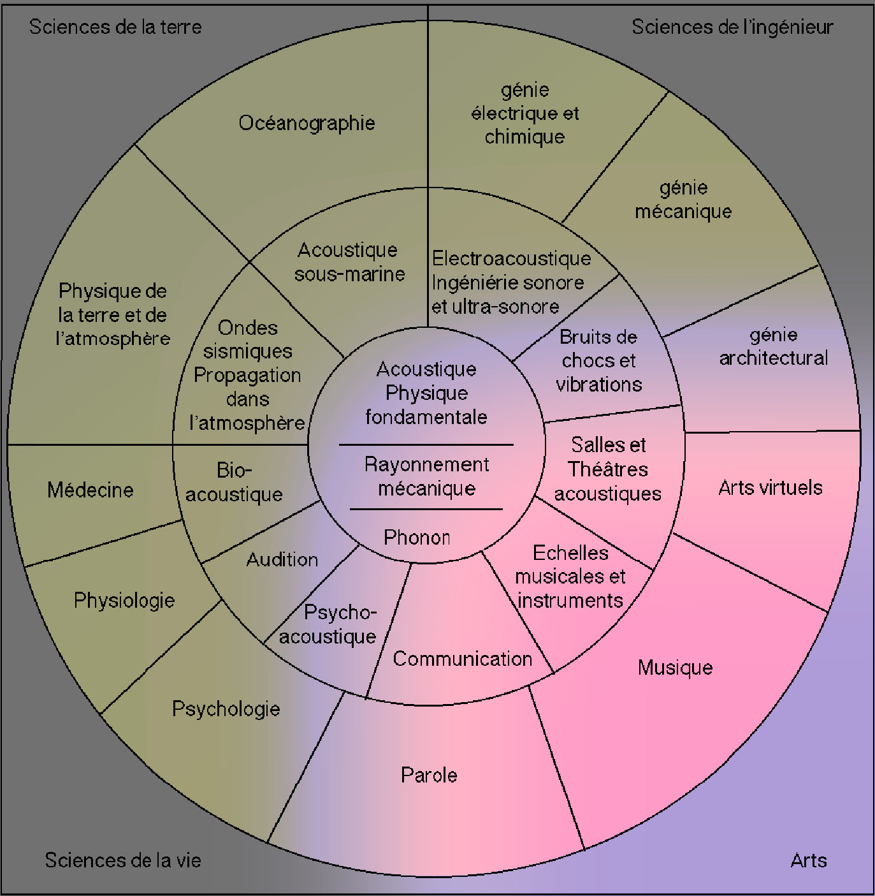
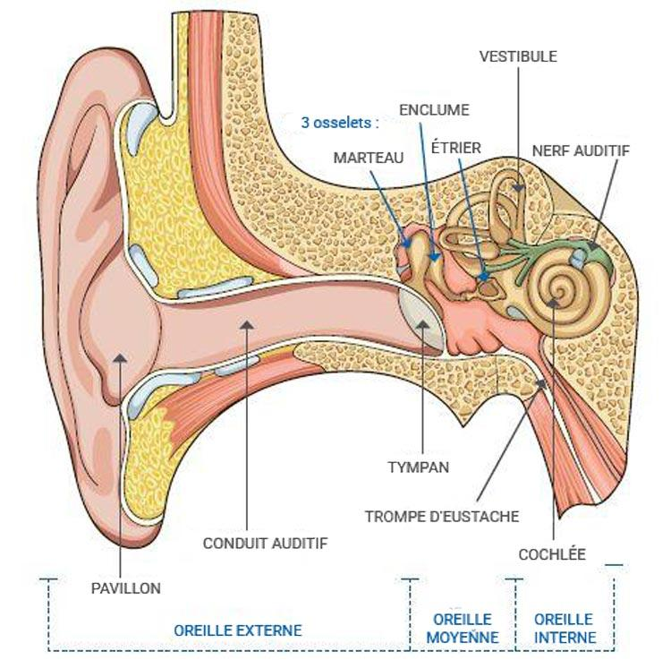
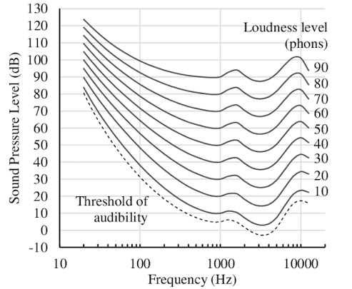

Le son : production, propagation et réception
Qu’est-ce que l’acoustique ?
L’acoustique est la science du son. Elle étudie :
- la production du son par une source vibrante ;
- sa propagation dans un milieu ;
- sa réception par un auditeur ou un dispositif de mesure.
L’acoustique musicale applique ces connaissances à la production, à l’organisation et à la perception des sons musicaux.

Son, note et musique
Un son est une vibration mécanique susceptible de produire une sensation auditive. Une note est un symbole musical qui représente certaines caractéristiques d’un son, principalement sa hauteur et sa durée.
Un même symbole musical peut être réalisé par des sons très différents selon l’instrument, le mode de jeu, la dynamique ou le lieu. Inversement, de nombreux sons employés en musique ne correspondent pas à une note déterminée : souffle, bruit, percussion, frottement, son électronique, etc.
Le timbre permet notamment de distinguer deux sons de même hauteur et de même intensité. Il dépend du spectre, de l’attaque et de l’évolution du son.
La production du son
Une source sonore met en vibration le milieu qui l’entoure :
- une corde met en mouvement la table d’harmonie d’un instrument ;
- une membrane de haut-parleur déplace l’air ;
- les plis vocaux (cordes vocales) interrompent périodiquement un flux d’air ;
- une percussion met en vibration une peau, une plaque ou un volume d’air.
La vibration de la source ne se déplace pas jusqu’à l’auditeur : elle transmet son mouvement aux particules voisines, qui le transmettent à leur tour.
La propagation
Une onde est une perturbation qui se propage. Le son a besoin d’un milieu matériel : air, eau, bois, métal, etc. Il ne se propage pas dans le vide.
La vitesse du son dépend du milieu et de la température :
| Milieu | Température | Vitesse approximative |
|---|---|---|
| air | 0 °C | 331 m/s |
| air | 20 °C | 343 m/s |
| eau | 13 °C | 1 430 m/s |
| fer | 20 °C | 4 900 m/s |
| bois de sapin | variable | environ 5 000 m/s |
Dans l’air, on retient souvent l’ordre de grandeur de 340 m/s.
Exemple : Si un événement se produit à 340 mètres, son son nous parvient environ une seconde plus tard. Ce délai explique pourquoi nous voyons un éclair avant d’entendre le tonnerre.
La réception du son
Le pavillon de l’oreille recueille les vibrations. Elles sont transmises par le conduit auditif au tympan, puis à l’oreille interne. La cochlée transforme les vibrations en messages nerveux interprétés par le cerveau.

Une personne jeune ayant une audition normale peut approximativement percevoir des fréquences comprises entre 20 Hz et 20 000 Hz :
- en dessous de 20 Hz : infrasons ;
- au-dessus de 20 000 Hz : ultrasons.
Ces limites varient selon les individus et évoluent notamment avec l’âge.

L’oreille n’est pas également sensible à toutes les fréquences :

Mesurer et représenter le son
Un microphone transforme les variations de pression acoustique en signal électrique. Ce signal peut ensuite être enregistré, observé ou analysé.
Le phonautographe, puis le phonographe, ont permis de conserver une trace du son. Aujourd’hui, l’ordinateur permet notamment d’observer :
- la forme d’onde, qui montre l’évolution du signal dans le temps ;
- le spectre, qui montre la répartition du son selon les fréquences ;
- le sonagramme, qui montre l’évolution du spectre dans le temps.
Ces représentations seront étudiées dans les séances suivantes.
À retenir
- Un son est une vibration mécanique qui se propage dans un milieu.
- L’acoustique étudie sa production, sa propagation et sa réception.
- Le son se propage dans l’air à environ 340 m/s.
- Le domaine audible humain s’étend approximativement de 20 Hz à 20 kHz.
- Le signal physique et la sensation auditive ne doivent pas être confondus.